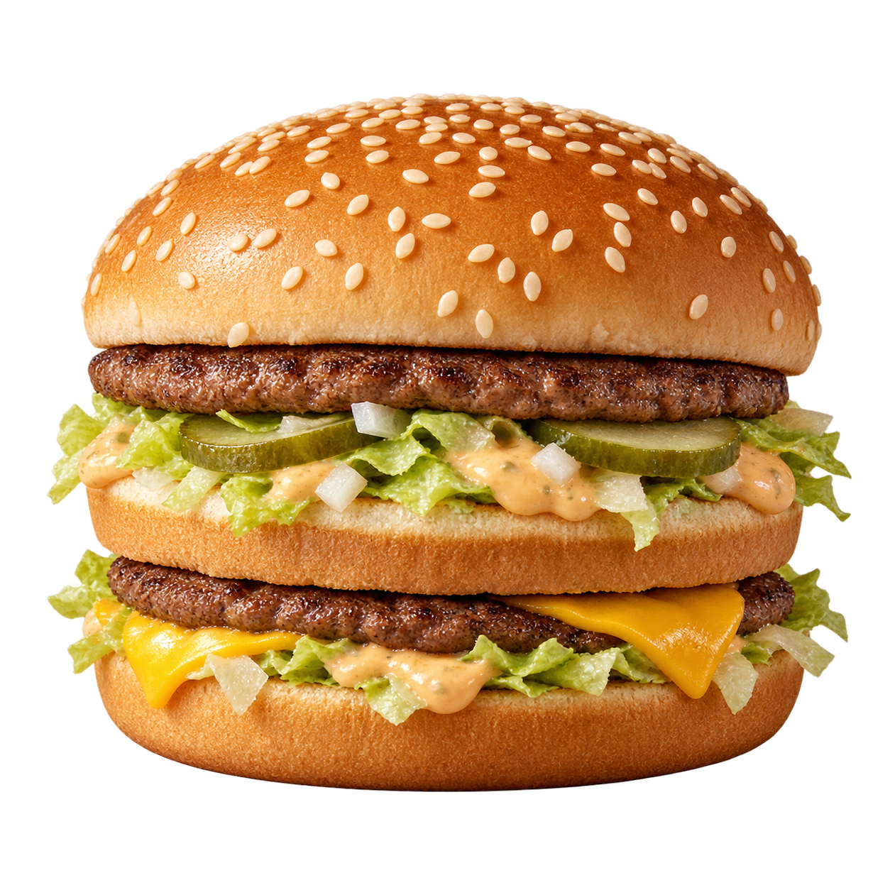

写真・イラストは未収録です。
価格は税抜、または税抜換算
—円
比較する価格
—円
税抜換算の価格は円単位に四捨五入。変化率は丸める前の価格で計算しています。
価格の条件と注意点
出典と比較条件を確認する
確認日は各出典に記録しています。公表資料の時点と今日の実売価格は異なる場合があります。
気になる商品を選ぶだけ。
年代の異なる価格を、出典付きで比べられます。
比べる年代は商品ごとに表示。容量や仕様の違いも、出典と一緒に確かめられます。
商品を探す
条件に合う商品がありません。「条件をクリア」で全商品に戻れます。
資料のない年の価格は推測しません。後の資料も現在の店頭価格とは限らないため、各商品の時点と条件をご確認ください。
税抜換算の価格は円単位に四捨五入。変化率は丸める前の価格で計算しています。
確認日は各出典に記録しています。公表資料の時点と今日の実売価格は異なる場合があります。
近所の文具店、学校帰りのパン屋。
自分の記録でも、昔と今を比べられます。
入力は端末内だけで使用し、公表データとは区別します。